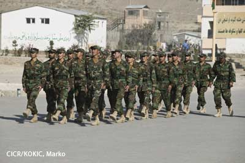

Le statut des personnes en situation de conflit armé international

En situation de conflit armé international, les personnes sont soit des combattants, soit des civils
1) Le combattant
Les catégories de personnes suivantes ont le statut de combattant:
- Les membres des forces armées régulières : toutes les personnes qui font organiquement partie d’une armée étatique d’un pays en conflit sont des combattants, qu’ils exercent des fonctions de combat ou non, à l’exception du personnel sanitaire et du personnel religieux.
 Les membres des forces armées restent des combattants même si la partie adverse ne reconnaîtrait pas le gouvernement ou l'autorité dont elles se réclament, tant que ce gouvernement ou cette autorité représente bien un État. Si plusieurs autorités prétendent représenter le même Etat, on admet généralement que les relations conflictuelles de chacune de ces autorités avec des États tiers soient considérées comme un conflit armé international dès lors qu’elles jouissent d’une autorité suffisante pour prétendre représenter une partie au conflit.
Les membres des forces armées restent des combattants même si la partie adverse ne reconnaîtrait pas le gouvernement ou l'autorité dont elles se réclament, tant que ce gouvernement ou cette autorité représente bien un État. Si plusieurs autorités prétendent représenter le même Etat, on admet généralement que les relations conflictuelles de chacune de ces autorités avec des États tiers soient considérées comme un conflit armé international dès lors qu’elles jouissent d’une autorité suffisante pour prétendre représenter une partie au conflit.
Exemple :
En 2001, durant le conflit en Afghanistan, seuls quelques États reconnaissaient le régime taliban comme le gouvernement légitime de l’Afghanistan. Le régime taliban n’en restait pas moins une autorité effective contrôlant la majorité du territoire.
Une Partie au conflit peut décider d’incorporer à ses forces régulières, une organisation paramilitaire ou un service chargé de faire respecter l’ordre tel que la police. Dans ce cas, elle a l’obligation de notifier sa décision à l’ennemi afin d'éviter toute confusion entre civils et combattants. À défaut de notification, les membres de cette organisation ou service devront être considérés comme des civils et ne pourront pas prétendre au statut de prisonnier de guerre en cas de capture.
Exemple :
La France a notifié que ses forces armées incluent de façon permanente la gendarmerie nationale.
- Les groupes armés, les mouvements de résistance, qui n’appartiennent pas à l’armée régulière : les membres de groupes armés qui se battent pour le compte d’un État partie à un conflit armé international peuvent eux aussi bénéficier du statut et des privilèges de combattant.
Ils doivent cependant, pour cela, respecter certaines conditions. Selon la 3ème Convention de Genève de 1949, il faut :
- condition de fond : que ce groupe armé appartienne à une Partie au conflit armé international. C’est-à-dire qu’il existe un lien, officiel ou tacite, avec cette partie.
- conditions de forme :
1. avoir à sa tête un « commandement responsable » ;
2. porter un signe distinctif fixe et reconnaissable à distance ;
3. porter ouvertement les armes ;
4. se conformer au droit de la guerre.
En 1977, les États ont décidé de revoir certaines dispositions du DIH pour tenir compte des réalités des derniers conflits. Les conditions pour que les membres d’un groupe armé d’une Partie à un conflit armé international soient reconnus comme combattants ont été allégées :- La subordination à une « Partie au conflit » ;
- Une organisation de type militaire ;
- Un commandement responsable exerçant un contrôle effectif sur les membres du groupe
- Une discipline qui assure le respect des règles du droit international applicables en cas de conflit armé.
De plus, les combattants doivent se distinguer de la population civile lors des opérations militaires et ce, afin de protéger les civils des effets des hostilités.
- La population qui se « lève en masse » : la population d'un territoire non occupé qui, à l'approche de l'ennemi, prend spontanément les armes pour combattre les troupes d'invasion sans avoir eu le temps de se constituer en force armée régulière, si elle porte ouvertement les armes et si elle respecte les lois et coutumes de la guerre.
2) le civil
Est civile toute personne qui n'est pas combattante
| Sources |
- Troisième Convention de Genève, 1949 : article 4
- Premier Protocole additionnel aux Conventions de Genève, 1977 : articles 43, 44 et 50
- Droit international humanitaire coutumier : règles 3 à 5